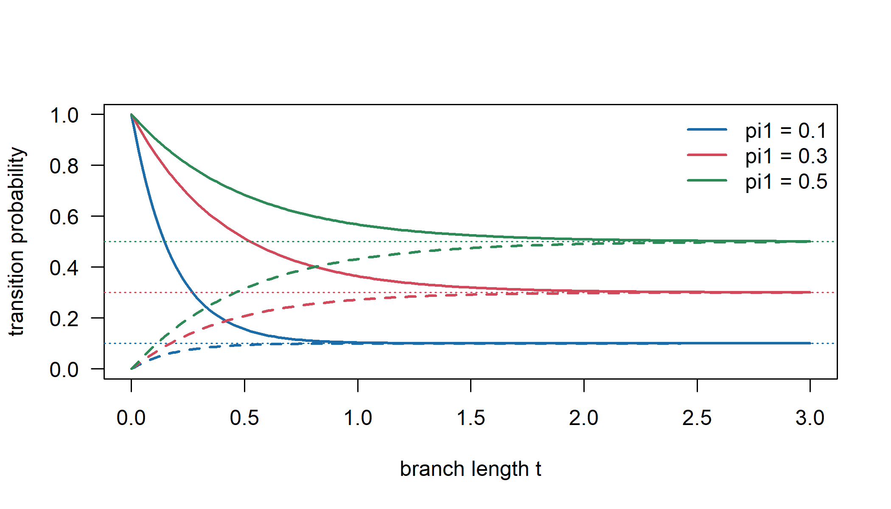
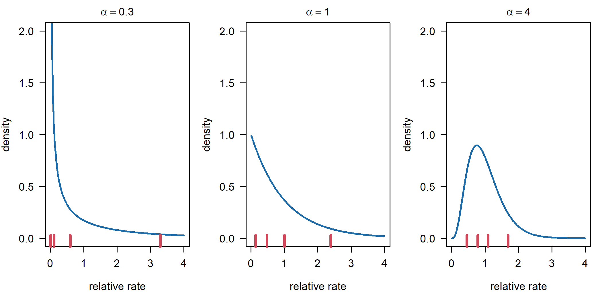
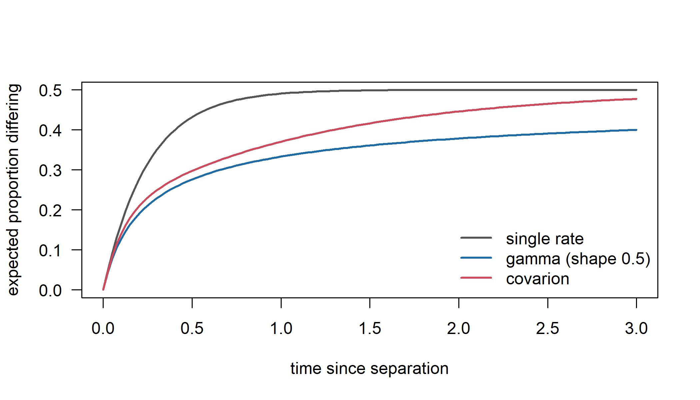
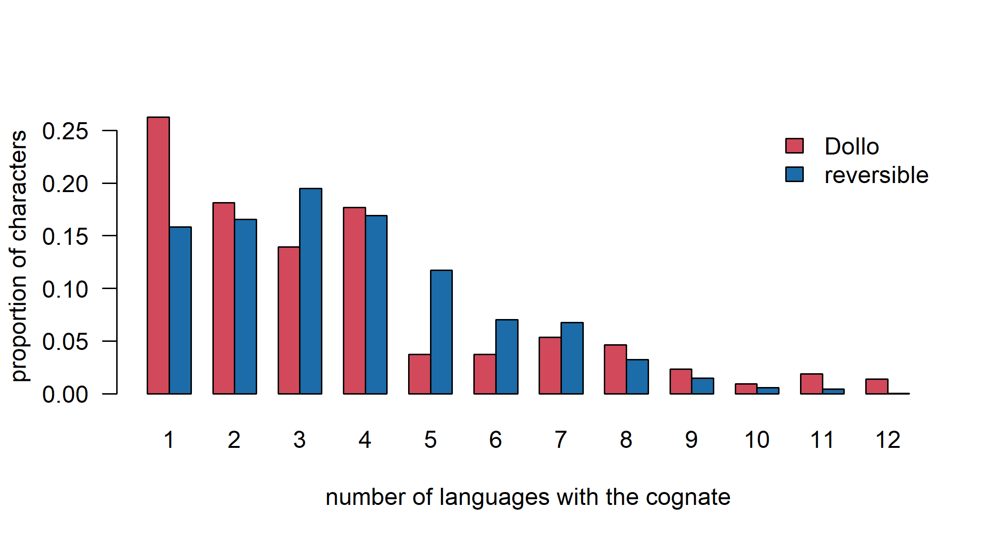
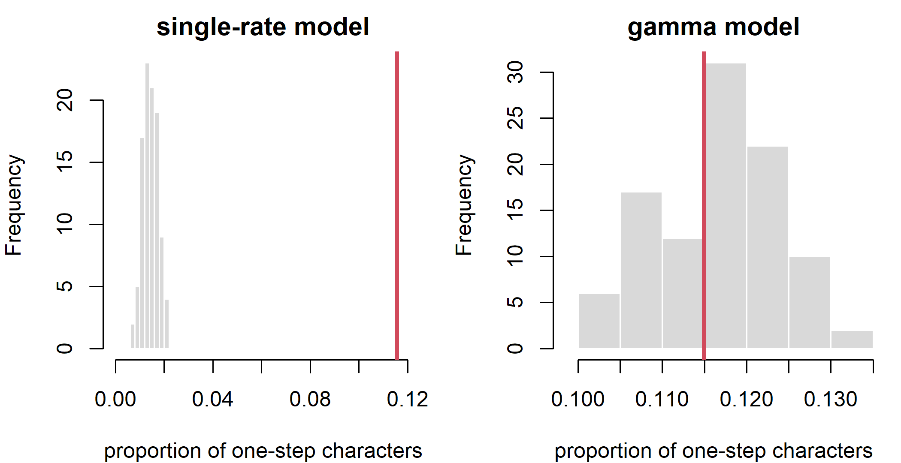

Chapter 7 Models of Lexical Evolution
Every likelihood-based or Bayesian analysis of cognate data rests on a stochastic model of how words come into and go out of use along the branches of a tree. The inference machinery of Chapters 5 and 6 is generic: give it a model that assigns a probability to each column of the data matrix, and it returns trees, branch lengths and dates. The substance lies in the model. This chapter asks what the models in current use assume about lexical change, which of those assumptions matter for which historical questions, and how we can tell when a model is failing. Rather than presenting the models one after another, we first set them side by side in a single comparative framework, and then examine each in turn: the reversible binary model and its ascertainment correction, rate variation among meanings and through time, the stochastic Dollo family, models for whole meaning slots, and explicit models of replacement and synonymy.
After reading this chapter you should be able to:
- convert a table of cognate judgments into binary and multistate characters, and explain what each coding assumes about synonyms and about the dependence among cognate classes of the same meaning;
- compare the main models of lexical evolution (Table 7.2) by the process they assume, whether they allow polymorphism and recurrent innovation, how they treat borrowing, and what their parameters can and cannot identify;
- choose the ascertainment correction that matches the way a cognate matrix was filtered, and recognize the most common mismatch between data and software;
- explain why among-character rate variation and covarion switching change estimated branch lengths and dates more than topologies;
- state the stochastic Dollo assumption, the linguistic processes that violate it, and its relation to the reversible binary model;
- identify which models actually account for the dependence among cognate classes of one meaning, and what binary analyses lose by ignoring it;
- design a posterior predictive check with a test statistic relevant to a given question, and distinguish it from a Bayes-factor comparison.
7.1 From cognate sets to characters
Recall from Chapter 3 how a lexical dataset is built. The analyst chooses a list of meanings (say, the 200 meanings of the Swadesh list), collects the most basic word for each meaning in each language, and then sorts the words for each meaning into cognate sets: groups of words that descend from a common ancestral word by regular sound change. Table 7.1 shows a small example for the meaning ‘hand’ in sixteen Indo-European languages. The Germanic languages share the hand word, the Romance languages continue Latin manus, Russian, Polish and Lithuanian share a Balto-Slavic word, Irish and Welsh share a Celtic word, and Hindi hāth and Persian dast both continue an Indo-Iranian word (compare Sanskrit hasta, Avestan zasta). The last pair is a useful reminder that cognacy is a historical judgment based on regular sound correspondences, not an impression of similarity: hāth and dast look nothing alike, yet they are cognate, while English hand and Hindi hāth look superficially similar and are not.
hand <- data.frame(
language = c("English", "German", "Dutch", "Swedish", "Latin", "Italian",
"French", "Spanish", "Russian", "Polish", "Lithuanian", "Irish",
"Welsh", "Greek", "Hindi", "Persian"),
form = c("hand", "Hand", "hand", "hand", "manus", "mano", "main", "mano",
"ruka", "ręka", "ranka", "lámh", "llaw", "cheri",
"hāth", "dast"),
class = c("A", "A", "A", "A", "B", "B", "B", "B", "C", "C", "C", "D", "D",
"E", "F", "F"))
# binary coding: one presence/absence character per cognate class
classes <- sort(unique(hand$class))
binary <- 1 * outer(hand$class, classes, "==")
dimnames(binary) <- list(hand$language, paste0("hand_", classes))
knitr::kable(cbind(hand[, c("form", "class")], binary), row.names = TRUE,
caption = "Words for 'hand' in sixteen Indo-European languages, their cognate classes, and the corresponding binary presence/absence coding (one character per cognate class).")| form | class | hand_A | hand_B | hand_C | hand_D | hand_E | hand_F | |
|---|---|---|---|---|---|---|---|---|
| English | hand | A | 1 | 0 | 0 | 0 | 0 | 0 |
| German | Hand | A | 1 | 0 | 0 | 0 | 0 | 0 |
| Dutch | hand | A | 1 | 0 | 0 | 0 | 0 | 0 |
| Swedish | hand | A | 1 | 0 | 0 | 0 | 0 | 0 |
| Latin | manus | B | 0 | 1 | 0 | 0 | 0 | 0 |
| Italian | mano | B | 0 | 1 | 0 | 0 | 0 | 0 |
| French | main | B | 0 | 1 | 0 | 0 | 0 | 0 |
| Spanish | mano | B | 0 | 1 | 0 | 0 | 0 | 0 |
| Russian | ruka | C | 0 | 0 | 1 | 0 | 0 | 0 |
| Polish | ręka | C | 0 | 0 | 1 | 0 | 0 | 0 |
| Lithuanian | ranka | C | 0 | 0 | 1 | 0 | 0 | 0 |
| Irish | lámh | D | 0 | 0 | 0 | 1 | 0 | 0 |
| Welsh | llaw | D | 0 | 0 | 0 | 1 | 0 | 0 |
| Greek | cheri | E | 0 | 0 | 0 | 0 | 1 | 0 |
| Hindi | hāth | F | 0 | 0 | 0 | 0 | 0 | 1 |
| Persian | dast | F | 0 | 0 | 0 | 0 | 0 | 1 |
There are two ways to turn such a table into phylogenetic characters. In multistate coding the meaning itself is the character, and the cognate classes A to F are its states; each language has one state (or several, if it has synonyms). In binary coding each cognate class becomes its own character, scored 1 in languages that have a word from that class for that meaning and 0 in languages that do not. A 200-meaning list for a few dozen languages typically yields several hundred to a few thousand binary characters. Binary coding has dominated Bayesian linguistic phylogenetics since Gray and Atkinson (2003), largely because the binary models are simple, well understood and implemented in all the major software. Multistate coding was used in the parsimony and compatibility work of Ringe et al. (2002) and is returning in several forms.
Whatever the coding, a model of lexical evolution must describe a few basic events. A new cognate class appears in a meaning slot when a language coins a new word, extends an existing word to a new meaning (semantic shift), or borrows a word; in binary terms this is a gain (a 0 becoming 1). A cognate class disappears from a meaning slot when the word falls out of use or is displaced; in binary terms, a loss (1 to 0). In multistate terms, a gain and a loss usually happen together as a replacement, often after a period in which old and new words coexist as synonyms.
7.2 A comparative framework for models of lexical change
The models in use differ less in their mathematics than in the answers they give to six questions about the linguistic process. Each question corresponds to a column of Table 7.2.
- What is the unit of observation? A presence/absence column for one cognate class, or a meaning slot whose value is one (or several) cognate classes.
- What generates and removes cognate classes? Reversible switching between “absent” and “present”, a birth-death process in which each class is born once, or replacement within a slot.
- Can a language have more than one word for a meaning (polymorphism)? Synonymy is common in real word lists, and a model must either allow it, forbid it, or treat it as uncertainty about a single state.
- Can the same cognate class arise more than once (recurrent innovation)? Under a reversible model a lost class can return; under Dollo-type models it cannot. Borrowing, parallel semantic shift and loose coding all produce apparent recurrence.
- Are the cognate classes of one meaning dependent? If ‘hand’ gains a new word, it usually loses the old one. Most binary models ignore this; meaning-slot models build it in.
- How is borrowing treated? Ignored (and absorbed by other parameters), forbidden (so that it becomes misspecification), or modeled.
Two further questions concern inference rather than process: which parameters the data can identify, and which checks reveal that a model is failing. The second part of the comparison (Table 7.3) summarizes these, together with the software that implements each model. Rows refer to the same models in both parts; the sections below take them in turn.
| Model | Data structure | Assumed process | Polymorphism allowed? | Recurrent innovation allowed? | Dependence among classes of one meaning | Borrowing |
|---|---|---|---|---|---|---|
| 1. Binary CTMC, no ascertainment correction | one 0/1 column per cognate class | reversible gain and loss at constant rates; columns independent | yes; any number of 1s per meaning, including none | yes: regain after loss, parallel gains | ignored | not modeled; loans look like extra gains |
| 2. Binary CTMC with ascertainment correction | as 1, after filtering (no all-absent columns; perhaps no constant or singleton columns) | as 1, conditioned on the column being observable | yes | yes | ignored | not modeled |
| 3. Binary CTMC with rate variation | as 2; columns may be grouped by meaning | as 2; each column or meaning has its own rate multiplier, constant over the tree | yes | yes, concentrated in fast columns | rates shared within a meaning if partitioned; states independent | not modeled; loans can mimic fast characters |
| 4. Binary covarion | as 2 | as 2, plus a hidden on/off switch; visible change only while “on” | yes | yes, clustered within clades | ignored | not modeled; may absorb clade-specific bursts |
| 5. Stochastic Dollo (with missing data and catastrophes) | 0/1 columns; missingness recorded by language and meaning | each class born once (Poisson births) and lost independently; bursts of change at catastrophes | yes; meanings are not represented | no: homoplasy only by parallel loss | ignored | violates the model: multiple origins forced into one deep birth plus many losses |
| 6. Pseudo-Dollo | as 2 | three-state chain: not yet born, present, lost; a lost class cannot return | yes | parallel births allowed; no regain after loss | ignored | partly absorbed as parallel births |
| 7. Lateral-transfer stochastic Dollo | as 5 | as 5, plus copying of present classes into contemporaneous lineages | yes | apparent recurrence explained by transfer | ignored | modeled explicitly |
| 8. Multistate Mk on meaning slots | one character per meaning; states are the observed cognate classes | symmetric replacement among the \(K_m\) observed classes | no; synonyms coded as ambiguity at best | yes: return to any existing class | respected by construction | not modeled; a loan looks like an ordinary change |
| 9. Infinite-states meaning slot | as 8 | every replacement creates a new class | no, in the basic form | no, except through an explicit homoplasy term | respected by construction | an explicit term in Warnow et al. (2006); otherwise not modeled |
| 10. Explicit replacement with synonymy | set of cognate classes for each language and meaning | words enter a slot, coexist as synonyms and are lost; loss may depend on competitors | yes, explicitly | optional (semantic shift, borrowing) | modeled explicitly | can be added as a source of new entries |
| Model | Principal parameters | Identifiability limits | Diagnostic checks | Software |
|---|---|---|---|---|
| 1 | frequency of presence \(\pi_1\), overall rate, branch lengths | only rate × time; \(\pi_1\) and rate biased by the missing all-absent columns | comparison with a corrected fit | any binary (“restriction site”) model: MrBayes, BEAST 2, RevBayes, phangorn |
| 2 | as 1 | only rate × time; the number of classes lost everywhere is not estimable | does the correction match the filter (singletons, constant columns)? site frequency spectrum | MrBayes (coding), BEAST 2 and BEASTling, RevBayes; phangorn and IQ-TREE +ASC give the variable-only (Mkv) correction |
| 3 | as 2, plus gamma shape \(\alpha\) or per-meaning rates | \(\alpha\) imprecise with few languages; gamma and invariant components trade off; slow meanings carry little information about their own rates | homoplasy statistics (proportion of one-step characters); per-meaning rates against word frequency | all major packages; meaning-level rates via BEASTling |
| 4 | as 3, plus switching rates \(s_{\text{on}}\), \(s_{\text{off}}\) | switching rates weakly identified; trade off against gamma variation and branch lengths (Tuffley and Steel 1998) | distribution of homoplasy across clades; comparison with a gamma-only fit | BEAST 2; BayesTraits; custom chains in RevBayes |
| 5 | birth rate \(\lambda\) (a nuisance), death rate \(\mu\), catastrophe rate and severity | only \(\mu t\); \(\lambda\) factors out; catastrophes trade off against branch lengths | site frequency spectrum; parallel losses; cognates per language | TraitLab; BEAST (Alekseyenko et al. 2008) |
| 6 | birth and death rates, root state frequencies | birth rate trades off against root frequencies; only rate × time | as 5; comparison with covarion fits | Babel package for BEAST 2 (Bouckaert and Robbeets 2017) |
| 7 | \(\lambda\), \(\mu\), transfer rate | transfer trades off against \(\mu\) and tree height; local transfer hard to separate from shorter branches; cost grows with the number of lineages | prior against posterior transfer rate; simulation with known transfer | TraitLab (Kelly and Nicholls 2017) |
| 8 | per-meaning rate (or gamma), branch lengths | \(K_m\) arbitrary, so the meaning of the rate depends on it; invariant meanings need an ascertainment decision | classes per meaning; homoplasy per meaning | MrBayes, BEAST 2, RevBayes, BayesTraits, phangorn |
| 9 | per-meaning replacement rates | identifiability of the tree studied by Warnow et al. (2006); slow meanings uninformative | compatibility counts; classes per meaning | compatibility methods (Ringe et al. 2002); multistate pseudo-Dollo as an approximation; custom simulation |
| 10 | rate of entry into a slot, loss rate, strength of competition | entry, loss and the sampling of synonyms are confounded; ancestral synonymy hard to separate from borrowing (Chapter 16) | synonyms per slot; predictive checks per meaning | no standard implementation; small state spaces can be specified in RevBayes (Höhna et al. 2016) |
Three points stand out. First, all seven binary models treat the cognate classes of a meaning as independent; they differ in what they assume about each column, not in how columns relate. Second, the binary models differ chiefly along two axes, rate heterogeneity (rows 3 and 4) and the single-birth assumption (rows 5 to 7), and these axes are largely independent of each other: a Dollo-type model can be given gamma rates, and a reversible model can be made covarion. Third, most identifiability limits concern time. Every model on a tree with unknown dates identifies only products of rates and times, so the step from branch lengths to years always depends on calibrations or clock priors (Chapters 9 and 10). In the vocabulary of Section 6.10, the rate parameters of these models are identifiable under the model only as rate-time products, are practically estimable mainly in aggregate, and are interpretable as historical quantities only once the coding is fixed: a “loss rate” in a binary model is not the same thing as a “replacement rate” in a meaning-slot model.
7.2.1 Coding choice and dependence within meanings
The coding decision interacts with every row of the table. Binary coding is required by models 1 to 7, single-state multistate coding by models 8 and 9, and set-valued coding (each language may have several classes per meaning) by model 10. Polymorphism is handled differently in each. In binary coding a synonym is simply a second 1 in the same meaning, so binary models accommodate synonymy without effort, which is one of their real strengths. In multistate coding a synonym can only be entered as an ambiguity, which most software reads as “one of these states, we do not know which”, a different claim from “both words were in use”. Ascertainment differs too. A binary matrix never contains all-absent columns and must be corrected for them (Section 7.4); a meaning-slot matrix has no all-absent pattern, but meanings in which every language has the same class are observed and informative about the rate, unless they have been dropped. Rates mean different things: a binary rate is a rate of gain or loss per cognate class, while a meaning-slot rate is a rate of replacement per meaning, and a single replacement appears in binary coding as one loss and one gain in two different columns.
Which models account for the dependence among the cognate classes of one meaning? Only the meaning-slot models of rows 8 to 10. If each language has exactly one word per meaning, the binary columns of a meaning are a deterministic re-coding of one multistate character: \(K\) columns could in principle take \(2^K\) joint values, but only \(K\) of them can occur. Independent binary models spread probability over all \(2^K\) values, including languages with no word at all for ‘hand’, and treat a replacement as two independent events. Models 8 and 9 respect the constraint by allowing only one state per slot, and model 10 represents it explicitly while also allowing synonyms. Partitioning a binary analysis by meaning (row 3) introduces dependence in rates among a meaning’s columns, but not in their states. The stochastic Dollo models (rows 5 to 7) do not represent meanings at all; they treat the vocabulary as a bag of traits, and the meaning structure enters only through the treatment of missing data, in which all classes of an unrecorded meaning are unknown together (Ryder and Nicholls 2011). The general remedy, familiar from morphology, is to combine dependent characters into one character with a structured state space, as in the correlated-evolution models of Pagel (1994) and the structured Markov models of Tarasov (2019). A meaning-slot model is exactly such a structured character for cognate classes.
What do binary analyses lose by ignoring the dependence? Their likelihood is a composite likelihood: a product of terms that are treated as independent although they are not. Composite likelihoods often give reasonable point estimates, which is consistent with the frequent agreement between binary and multistate topologies, but they overstate the information in the data, so that posterior intervals are too narrow. They also weight meanings by the number of cognate classes they produce, so that fast meanings dominate (Section 7.8). The size of these effects on real datasets has been studied less than it deserves (Chapter 15).
The probability that an independent binary model assigns to configurations that are impossible in synonym-free data, and the algebra relating binary and multistate codings, are worked out in Section C.1.9.
The framework also shows which differences between models matter for which question. For topology, the binary models usually agree once ascertainment and rate variation are handled, because the topology is driven mainly by shared presences. For dates and branch lengths, everything in the table matters: the ascertainment correction, the rate model, the single-birth assumption and the treatment of borrowing all change the inferred amount of change. For rates of lexical replacement as historical quantities, meaning-slot models give the more interpretable parameters. For borrowing itself, only model 7 among these, and the network models of Chapter 8, estimate it at all.
7.3 The binary continuous-time Markov chain
7.3.1 The model
The simplest model treats each binary cognate character as a two-state continuous-time Markov chain (CTMC), exactly as in Section 5.2.4. In each small interval of time \(dt\), a character in state 0 switches to 1 with probability \(q_{01}\,dt\), and a character in state 1 switches to 0 with probability \(q_{10}\,dt\). The instantaneous rate matrix is
\[\begin{equation} \mathbf{Q} = \begin{pmatrix} -q_{01} & q_{01} \\ q_{10} & -q_{10} \end{pmatrix} = \beta \begin{pmatrix} -\pi_1 & \pi_1 \\ \pi_0 & -\pi_0 \end{pmatrix}, \tag{7.1} \end{equation}\]
where the second form reparameterizes the two rates as an overall rate \(\beta\) and a stationary distribution \(\pi = (\pi_0, \pi_1)\) with \(\pi_0 + \pi_1 = 1\). (In Chapter 5 the gain and loss rates were called \(\alpha\) and \(\beta\); here \(q_{01} = \beta\pi_1\) and \(q_{10} = \beta\pi_0\).) The stationary frequency of presence is \(\pi_1 = q_{01}/(q_{01}+q_{10})\). It is conventional to scale \(\beta\) so that one unit of branch length corresponds to one expected change per character, which requires \(2\beta\pi_0\pi_1 = 1\). The transition probabilities have the closed form derived in Chapter 5:
\[\begin{equation} \mathbf{P}(t) = \begin{pmatrix} \pi_0 + \pi_1 e^{-\beta t} & \pi_1\left(1 - e^{-\beta t}\right) \\ \pi_0\left(1 - e^{-\beta t}\right) & \pi_1 + \pi_0 e^{-\beta t} \end{pmatrix}. \tag{7.2} \end{equation}\]
The intuition is worth spelling out. Think of the chain as experiencing “resampling events” at rate \(\beta\), at each of which the state is redrawn from the stationary distribution \(\pi\) (a redraw may return the same state). With probability \(e^{-\beta t}\) no resampling event has occurred along a branch of length \(t\), and the character keeps its state; with probability \(1 - e^{-\beta t}\) at least one has occurred, and the state is a fresh draw from \(\pi\). As \(t\) grows, every row of \(\mathbf{P}(t)\) converges to \(\pi\): after a long enough time, the state of a character tells us nothing about its ancestral state. This is saturation, and it sets the horizon beyond which cognate data cannot resolve relationships.
As Section 5.2.4 explained, this is the restriction site or binary model of MrBayes and BEAST, introduced for restriction-site data by Felsenstein (1992); with \(\pi_0 = \pi_1 = 1/2\) it is the two-state Jukes-Cantor model (Jukes and Cantor 1969), the Mk model with \(k = 2\) (Lewis 2001). The likelihood of a tree \(\tau\) with branch lengths \(\mathbf{t}\) for a character \(D_i\) is computed by Felsenstein’s pruning algorithm (Section 5.4), and the likelihood of the whole matrix is the product over characters, which assumes that characters evolve independently:
\[\begin{equation} L(\tau, \mathbf{t}, \theta) = \prod_{i=1}^{N} P(D_i \mid \tau, \mathbf{t}, \theta). \tag{7.3} \end{equation}\]
The product in Equation (7.3) is where the independence of cognate classes within a meaning, discussed in Section 7.2.1, is assumed. The function below implements Equation (7.2) with the conventional scaling.
binary_P <- function(t, pi1, r = 1) {
# transition probabilities of the binary CTMC, scaled so that r is the
# expected number of changes per character per unit time
pi0 <- 1 - pi1
beta <- r / (2 * pi0 * pi1)
e <- exp(-beta * t)
matrix(c(pi0 + pi1 * e, pi1 * (1 - e),
pi0 * (1 - e), pi1 + pi0 * e), 2, 2, byrow = TRUE,
dimnames = list(from = c("0", "1"), to = c("0", "1")))
}
round(binary_P(0.5, pi1 = 0.3), 4)#> to
#> from 0 1
#> 0 0.7912 0.2088
#> 1 0.4871 0.5129Figure 7.1 shows how the probability that a cognate present at the start of a branch is still present at its end, \(P_{11}(t)\), decays toward \(\pi_1\), and how the probability that a cognate absent at the start has been gained, \(P_{01}(t)\), rises toward \(\pi_1\). When \(\pi_1\) is small, as it is for real cognate data, most of the action lies in the loss rate.
tt <- seq(0, 3, length.out = 200)
cols <- c("#1b6ca8", "#d1495b", "#2e8b57")
pis <- c(0.1, 0.3, 0.5)
plot(NA, xlim = range(tt), ylim = c(0, 1), xlab = "branch length t",
ylab = "transition probability", las = 1)
for (k in seq_along(pis)) {
P <- sapply(tt, function(x) binary_P(x, pis[k])[c(4, 3)]) # P11, P01
lines(tt, P[1, ], col = cols[k], lwd = 2)
lines(tt, P[2, ], col = cols[k], lwd = 2, lty = 2)
abline(h = pis[k], col = cols[k], lty = 3)
}
legend("topright", legend = paste("pi1 =", pis), col = cols, lwd = 2, bty = "n")
Figure 7.1: Transition probabilities of the binary CTMC as a function of branch length (in expected changes per character), for three values of the stationary frequency of presence. Solid lines: probability that a present cognate is present at the end of the branch. Dashed lines: probability that an absent cognate has been gained. Both converge to the stationary frequency (dotted).
The examples in this chapter use two simulators, sim_ctmc_binary() for the reversible binary CTMC (with optional gamma-distributed rates) and sim_dollo() for the stochastic Dollo process of Section 7.7. They are loaded silently here.
7.3.2 What the binary CTMC assumes about words
The binary CTMC is a convenient fiction, and it pays to be explicit about which parts are fictional. First, it allows a lost cognate to be regained. Once English replaced Old English wēpan with cry as its basic word for ‘weep’, the wēpan lineage cannot return as the basic word for that meaning except by borrowing or by a parallel semantic shift; under the CTMC, however, a 0-to-1 change at rate \(q_{01}\) is always possible. A related oddity is that the model treats absence as a state that can persist for ever in the deep past, whereas a cognate class did not exist at all before its birth. Second, the CTMC treats the many characters derived from the same meaning as independent, although within a meaning they are tightly linked (Section 7.2.1). Third, it assumes one rate for all characters and all branches, unless we add the extensions discussed below.
Why, then, has it worked as well as it has? Part of the answer is that when the stationary frequency \(\pi_1\) is small, gains are rare relative to losses, and the reversible model behaves almost like an irreversible one; after ascertainment correction, the stochastic Dollo model is the limit of the binary CTMC as \(\pi_1 \to 0\) (Section 7.7.4). Part of the answer is that the topology of a tree is driven mainly by shared presences, which the CTMC handles well. And part is that the CTMC is easy to extend with rate variation, relaxed clocks and partitions in standard software. “Has worked” should be read carefully, however. The usual evidence is that inferred trees recover subgroups established by the comparative method, and that agreement is not independent validation (Section 1.9.1; Chapter 15): it shows that the model extracts the signal that historical linguists put into the data, not that the model’s account of the process is right.
7.4 Ascertainment bias and its correction
7.4.1 Why some characters can never be observed
A cognate character is created only when at least one language in the sample has a word belonging to that cognate class. Cognate classes that existed in some ancestral language but died out in every descendant leave no trace, so the column of all zeros, which the CTMC predicts with substantial probability, never appears in the data. Section 5.6 introduced this ascertainment bias and showed that ignoring it inflates the estimated tree length. What is specific to lexical data is that cognate matrices are filtered in several different ways, and each way requires its own correction.
The same problem arises in biology whenever characters are selected because they vary. Restriction-site data have no all-absent columns because a site is only scored if it is cut in at least one sample (Felsenstein 1992); morphologists usually score only characters that vary among the taxa studied (Lewis 2001); and SNP datasets contain, by construction, only variable sites (Leaché et al. 2015).
7.4.2 The correction formula
The remedy is to condition the likelihood on the fact that each character is observable. Let \(\mathcal{U}\) be the set of patterns that could never enter the dataset. The ascertainment-corrected likelihood is
\[\begin{equation} L_{\mathrm{asc}}(\tau, \mathbf{t}, \theta) = \prod_{i=1}^{N} \frac{P(D_i \mid \tau, \mathbf{t}, \theta)}{1 - \sum_{u \in \mathcal{U}} P(u \mid \tau, \mathbf{t}, \theta)}. \tag{7.4} \end{equation}\]
The denominator is the same for every character, so the correction amounts to subtracting \(N \log\bigl(1 - \sum_u P(u)\bigr)\) from the log-likelihood, and the probability of each unobservable pattern is computed with the same pruning algorithm used for the data. Different choices of \(\mathcal{U}\) correspond to different ways of building a dataset:
- No-absence correction: \(\mathcal{U} = \{\mathbf{0}\}\). This is the natural choice for cognate data in which every cognate class attested in at least one language is retained, including classes attested in one language only (singletons) and classes attested in all languages. It corresponds to the
noabsencesitescoding option of MrBayes (Ronquist, Teslenko, et al. 2012), and an equivalent correction is available for binary cognate data in BEAST 2 (Bouckaert et al. 2014; Maurits et al. 2017). - Variable-only correction: \(\mathcal{U} = \{\mathbf{0}, \mathbf{1}\}\). This is the Mkv model of Lewis (2001), appropriate when characters present in all languages have also been discarded.
- Informative-only correction: \(\mathcal{U}\) contains all constant and singleton patterns, appropriate when only parsimony-informative characters were retained.
Each correction is right only for the corresponding way of building the dataset; any other pairing is itself a misspecification (see the caution below). In the SNP literature, Leaché et al. (2015) compare the conditional correction of Equation (7.4), which follows Lewis, with alternatives due to Felsenstein that require knowing (or estimating) how many invariant sites were dropped. For cognate data the number of cognate classes that died out everywhere is unknowable: in the terms of Section 6.10, it is not identifiable under any of the models, and the conditional likelihood is the device that lets the analysis proceed without it.
Missing data complicate matters. If a language has no recorded word for a meaning, its entries for all cognate classes of that meaning are unknown, not absent. Most software treats such entries as “?” and sums over both states at that leaf. But the set of unobservable patterns now depends on which languages are missing for each meaning, so a single denominator is no longer exact. Ryder and Nicholls (2011) work through this problem for the stochastic Dollo model and show how to condition correctly when the pattern of missingness varies across meanings.
The ASC = TRUE option of phangorn::pml() implements the Lewis (variable-only) correction, which excludes both constant patterns. It is correct for data from which all-present as well as all-absent columns were deleted, as in the example in Section 7.5 below, but not for the usual cognate matrix that retains universally shared cognates. Read the documentation of your software to find out which patterns its correction excludes, and make sure your data were filtered in exactly that way. A mismatch between the filtering of the data and the correction applied is one of the most common silent errors in phylogenetic analyses of discrete characters.
The conditional-likelihood argument behind Equation (7.4), the denominators for each filtering scheme and for meaning-specific missing data, and a hand-coded pruning likelihood with a no-absence correction are in Section C.1.3. There, a parameter-recovery simulation (Table C.1) shows that the uncorrected fit overestimates both the frequency of presence and the rate, while the corrected fit recovers them.
7.5 Rate heterogeneity among characters
7.5.1 Why meanings differ in rate
The words for some meanings are replaced quickly and the words for others hardly at all. Across Indo-European, the words for ‘two’, ‘three’, ‘who’ and ‘I’ fall into very few cognate classes, while the words for meanings such as ‘dirty’, ‘to turn’ or ‘to throw’ fall into a dozen or more. Pagel et al. (2007) estimated a separate rate of replacement for each of the 200 Swadesh meanings across 87 Indo-European languages and found that the rates spanned roughly two orders of magnitude. A single-rate model is therefore badly wrong. It forces fast and slow characters onto the same clock, so that the fast characters saturate and the slow ones look anomalously conservative. The usual consequence is that deep branches are underestimated: the model reads saturation as recency.
7.5.2 The gamma model
The standard remedy, borrowed from molecular phylogenetics (Yang 1994), is to let each character \(i\) evolve at its own relative rate \(\rho_i\), a random variable drawn independently from a gamma distribution with mean one and shape parameter \(\alpha\):
\[\begin{equation} f(\rho \mid \alpha) = \frac{\alpha^{\alpha}}{\Gamma(\alpha)}\, \rho^{\alpha - 1} e^{-\alpha \rho}, \qquad \mathrm{E}[\rho] = 1, \quad \mathrm{Var}[\rho] = 1/\alpha. \tag{7.5} \end{equation}\]
When \(\alpha\) is large, all rates are close to one. When \(\alpha < 1\), the distribution is L-shaped, with many very slow characters and a long tail of fast ones. The character likelihood becomes an integral over the unknown rate, approximated in practice by \(K\) (usually four) equally probable categories, each represented by its mean rate (Section A.4.3). A proportion of invariant characters can be added (the “+I” of models such as “GTR+I+G”), although for cognate data this is rarely sensible: a cognate present in all languages is not invariant in any meaningful sense, and the gamma and invariant components are notoriously hard to separate. Figure 7.2 shows three gamma distributions and their four-category approximations.
library(phangorn)
par(mfrow = c(1, 3), mar = c(4, 4, 2, 1))
for (a in c(0.3, 1, 4)) {
x <- seq(0.01, 4, length.out = 300)
plot(x, dgamma(x, a, a), type = "l", lwd = 2, col = "#1b6ca8",
ylim = c(0, 2), xlab = "relative rate", ylab = "density", las = 1,
cex.axis = 1.15, cex.lab = 1.15, cex.main = 1.15,
main = bquote(alpha == .(a)))
rug(discrete.gamma(a, 4), lwd = 3, col = "#d1495b", ticksize = 0.08)
}
Figure 7.2: Gamma distributions of relative rates for three shape parameters (curves) and the mean rates of the four equiprobable categories used to approximate them (ticks along the bottom of each panel). Small shape parameters imply many nearly frozen characters and a few very fast ones.
The shape parameter has a direct linguistic reading. A small \(\alpha\) says that a minority of characters accounts for most of the cognate turnover and that many characters change very rarely. Gray and Atkinson’s influential dating of Indo-European (Gray and Atkinson 2003) used the binary restriction-site model with gamma-distributed rates in MrBayes, and almost every later Bayesian analysis of cognate data has included some form of among-character rate variation.
The number of categories deserves a moment’s thought, because it is easy to mistake for a substantive choice. Four equiprobable categories are a convention that approximates the continuous gamma well enough for most purposes; the categories are not four classes of meanings. Comparing two, four or eight categories by Bayes factors therefore measures how well the approximation works, not how many “rate classes” the vocabulary has, and once the approximation is adequate the differences are of the order of the Monte Carlo error of the estimates. A genuinely different model is obtained when the category rates and weights are both estimated, the free-rate model of Yang (1995), called FreeRate by Soubrier et al. (2012) and available in IQ-TREE as +R. It can represent rate distributions that the gamma cannot, such as a block of nearly frozen meanings beside a fast-changing remainder. Simulation studies of molecular data show that misspecified rate heterogeneity can bias rate estimates in ways that depend on the time scale (Soubrier et al. 2012), which makes the choice relevant to dating. Script 17_rate_categories.Rev of Appendix H compares these options on data simulated with continuous gamma rates (Section H.3.18): two categories fit clearly worse than four, eight are indistinguishable from four, and neither free weights nor FreeRate improves on the gamma when the true rates are gamma-shaped. A maximum-likelihood version of the same experiment, which also shows how the estimated tree length creeps up as categories are added, is in Section C.1.4.
7.5.3 Fitting rate-variable models with phangorn
The next chunk simulates data with strong rate variation (\(\alpha = 0.4\)) on a random 20-language tree, removes both kinds of constant columns so that the Lewis correction implemented in phangorn is the right one, and compares a single-rate model with a four-category gamma model by maximum likelihood and AIC (Chapter 5). Tree topology and branch lengths are estimated in both cases. In the vocabulary of Section 6.10, the experiment has two parts: for the gamma model it is a parameter-recovery simulation, since the data were generated under that model’s own assumptions; for the single-rate model it tests robustness under misspecification, since the data contain rate variation that the model ignores.
Branch lengths under ASC = TRUE in phangorn. In our tests with phangorn 2.12.1, optim.pml() did not reliably optimize branch lengths for a model fitted with ASC = TRUE. Started from a tree already fitted without the correction it could leave the branch lengths unchanged, and from other starting trees it stopped short of the maximum of the corrected likelihood; update() on such a fit also silently dropped the correction. Chapter 5 met the same problem (Section 5.6). We therefore use optim.pml() for the topology search only and then re-optimize all branch lengths, and the gamma shape where there is one, directly on the corrected log-likelihood with the small helper refine_asc_edges() defined in the book’s R/setup.R. The NNI search relies on the same routines, so its topology is best treated as a good tree rather than a guaranteed optimum. Later versions of phangorn may behave differently; comparing the log-likelihood before and after such a refinement is a quick check. IQ-TREE and RAxML-NG (Section 17.13.4) implement the same correction.
set.seed(11)
tr20 <- rtree(20, tip.label = paste0("L", 1:20))
Xg <- sim_ctmc_binary(tr20, 2000, pi1 = 0.5, rate = 1, shape = 0.4)
Xv <- Xg[, colSums(Xg) > 0 & colSums(Xg) < nrow(Xg)] # variable columns only
pd <- phyDat(Xv, type = "USER", levels = c("0", "1"))
start <- NJ(dist.hamming(pd))
ctl <- pml.control(trace = 0)
fit_eq <- optim.pml(pml(start, pd, ASC = TRUE), optNni = TRUE, control = ctl)
fit_g <- optim.pml(pml(start, pd, ASC = TRUE, k = 4), optNni = TRUE,
optGamma = TRUE, control = ctl)
# optim.pml() keeps the NNI topology; branch lengths (and, for the gamma
# model, the shape) are re-optimized on the corrected likelihood (see text)
fit_eq <- refine_asc_edges(fit_eq)
fit_g <- refine_asc_edges(fit_g, opt_shape = TRUE)
tab <- data.frame(
model = c("binary, single rate", "binary + Gamma(4)"),
logLik = c(fit_eq$logLik, fit_g$logLik),
AIC = AIC(fit_eq, fit_g)$AIC,
alpha = c(NA, fit_g$shape),
tree_length = c(sum(fit_eq$tree$edge.length), sum(fit_g$tree$edge.length)),
RF_to_truth = c(RF.dist(fit_eq$tree, tr20), RF.dist(fit_g$tree, tr20)))
knitr::kable(tab, digits = c(0, 1, 1, 2, 2, 0), caption = "Maximum-likelihood fits of a single-rate and a gamma rate-variation model to binary data simulated with strong rate heterogeneity (true shape 0.4, true tree length about 16.8). RF is the Robinson-Foulds distance to the true topology.")| model | logLik | AIC | alpha | tree_length | RF_to_truth |
|---|---|---|---|---|---|
| binary, single rate | -19886 | 39846 | NA | 7.63 | 0 |
| binary + Gamma(4) | -19326 | 38727 | 0.43 | 19.27 | 4 |
#> true_tree_length
#> 16.75The gamma model is strongly preferred by AIC, and the most striking difference lies in the total tree length. The single-rate model, unable to accommodate the fast characters except by treating them as saturated noise, collapses the tree to less than half its true length (46%). The gamma model estimates the shape parameter close to its true value of 0.4 and comes much nearer the true length, though it overshoots it by about 15%; errors of this size in total tree length are not unusual for a dataset of this size, because the shape parameter and the tree length are hard to estimate separately. Applied to a dated analysis, a bias of the first kind would make a family look much younger than it is. The topology, by contrast, is close to the truth under both models in this easy case, differing from it by at most a couple of splits. This is a general pattern: rate heterogeneity matters most for branch lengths and dates, and for topology mainly when branches are long or unequal. The simulation demonstrates the direction of the bias; it does not show how large the bias is for any real dataset, which depends on the true distribution of rates.
7.5.4 Beyond the gamma: partitions and meaning-specific rates
The gamma model treats rates as exchangeable random effects: each character’s rate is drawn from the same distribution, without reference to what the character is. An alternative is to use what we know about the characters. All binary characters derived from the same meaning can share a rate, so that the analysis estimates one rate per meaning (a partitioned model), or meanings can be grouped into a few rate classes, for example by semantic domain or part of speech. Since all the cognate classes of a meaning are linked by the process of replacement, a per-meaning rate is linguistically more natural than independent per-character rates, and it is the one step toward within-meaning dependence that binary models can take (Section 7.2.1). BEASTling makes it straightforward to request meaning-specific rate variation in BEAST 2 (Maurits et al. 2017), and the practical guide of Hoffmann et al. (2021) discusses the available options. Estimating hundreds of separate rates costs precision, of course, so such models are best combined with a hierarchical prior that shrinks meaning rates toward a common distribution. That brings us back to something like the gamma model, now applied at the level of meanings rather than cognate classes.
Partitioning can also separate data types. Lexical, phonological and grammatical characters change at very different rates and by different mechanisms (Greenhill et al. 2017), and a combined analysis should allow each partition its own substitution model, rate and possibly clock. Chapter 9 returns to rate differences among data types; Chapter 16 discusses total-evidence analyses that combine them.
7.5.5 Word frequency as a rate predictor
A further step is to model rate variation as a function of a measured covariate. The best known example is word frequency: Pagel et al. (2007) related per-meaning rates of cognate replacement in Indo-European to frequencies of use in corpora of four modern Indo-European languages and found that frequency alone accounted for about half of the variation in rates. Section 9.7.1 discusses this work, its extension beyond Indo-European (Calude and Pagel 2011) and the debate over “ultraconserved words”. From a modeling point of view, the frequency effect suggests a regression model for rates, \(\log \rho_m = \beta_0 + \beta_1 \log(\text{frequency}_m) + \varepsilon_m\) for meaning \(m\), embedded within the phylogenetic likelihood, so that frequency information sharpens rate estimates for meanings with few cognate changes. To our knowledge, covariate-dependent rate models of this kind have rarely if ever been built directly into a tree-inference analysis of cognate data; the published studies estimate rates first and relate them to frequency afterwards, which ignores the uncertainty in the estimated rates.
Frequency and the rate of lexical replacement in Indo-European. Pagel et al. (2007) analyzed the Indo-European Swadesh-list data compiled by Dyen and colleagues for 87 languages. Rather than coding each cognate class as a binary character, they treated each meaning as a multistate character, the states being its cognate classes, and estimated its rate of replacement across a Bayesian sample of trees. The rates varied enormously, from meanings expected to retain the same cognate for many millennia to meanings replaced every few centuries. Corpus frequencies predicted these rates well, with frequent words changing slowly, and the relation held within parts of speech as well as across them. The study made two methodological points. First, rate heterogeneity among meanings is not noise but a lawful property of vocabulary, which justifies modeling it explicitly. Second, because rates differ predictably, the rate of a meaning is partly knowable in advance, which could in principle be used to build informative priors for dating. Because the rates were estimated with a multistate model (row 8 of Table 7.2), they are rates of replacement per meaning and are not directly comparable with the per-class loss rates of binary analyses.
7.6 Covarion models: rates that change through time
The gamma model lets characters differ in rate but holds each character’s rate constant over the whole tree. That is unrealistic for words. A meaning can be stable for thousands of years and then enter a period of rapid turnover, for instance when taboo, contact with a prestige language or a change in material culture makes the old word unsuitable. Conversely, a meaning that is volatile in one subfamily may be stable in another. In biology this phenomenon is called heterotachy, a change in the rate of a site through time (Lopez et al. 2002). Its classic formulation is the covarion (“concomitantly variable codon”) hypothesis of Fitch and Markowitz (1970), who proposed that at any moment only a subset of the sites in a gene are free to vary, and that the set of variable sites changes as the gene evolves.
Tuffley and Steel (1998) turned the idea into a tractable Markov model by giving each site a hidden switch that is either “on” (free to change) or “off” (frozen), and letting the switch itself flip at random. Galtier (2001) and Huelsenbeck (2002) developed related covarion-like models and tests for molecular data. For binary characters the state space has four states, absent and present while on and absent and present while off. The visible state changes only while the switch is on, and since the data record only the visible state, the likelihood sums over the hidden switch at each leaf. The gamma model and the covarion model can be combined, giving characters that differ in mean rate and also switch between active and inactive periods.
The binary covarion model is available for cognate data in BEAST 2 and was used, for example, by Bouckaert et al. (2012) for Indo-European, alongside other substitution models. In BayesTraits, Pagel and Meade implemented a closely related covarion model for discrete characters. One frequently overlooked consequence of the covarion model concerns how fast similarity decays with time, which is what drives date estimates. Figure 7.3 shows the expected proportion of binary characters at which two languages that separated \(t\) units ago differ, under a single-rate model, a gamma model and a covarion model with the same mean rate.

Figure 7.3: Expected proportion of binary characters that differ between two languages as a function of the time since they separated, under a single-rate binary CTMC, a gamma model (shape 0.5) and a covarion model (switching rates 0.5), all with the same mean rate and equal state frequencies. Rate heterogeneity of either kind slows saturation, so that a given level of divergence implies a greater age.
Under a single rate, divergence saturates at one half within about one unit of time. Under the gamma and covarion models it keeps rising slowly for much longer, because some characters (the slow ones, or the ones switched off) retain information about deep splits. Inverting these curves to infer age from divergence gives very different answers in the saturated region, which is why the choice of rate model has consequences for the dating controversies discussed in Chapters 10 and 15. It is also why the rate model is part of what a date estimate depends on: two analyses with the same calibrations but different rate models can place the same root at different ages, and in the saturated region the data alone cannot say which is right.
The covarion rate matrix (Equation (C.1)), its stationary distribution and scaling, the closed-form divergence curves for the single-rate and gamma models, and the code for Figure 7.3 are in Section C.1.5.
Gamma rates and covarion switching are not interchangeable even when they give similar divergence curves. Under the gamma model a character is consistently fast or slow across the whole tree, so the fast characters are fast in every subfamily. Under the covarion model a character’s rate is correlated only among closely related lineages. The two models therefore make different predictions about how homoplasy is distributed across clades, which is what allows the data to distinguish them. With few languages, however, that information is thin, and the switching rates are among the least practically estimable parameters in Table 7.3.
7.7 The stochastic Dollo model
7.7.1 Dollo’s law and cognate data
The paleontologist Louis Dollo argued in 1893 that evolution does not retrace its steps: a complex structure, once lost, is not regained in the same form (Dollo 1893). In phylogenetics, Dollo characters are characters that may be gained only once but lost any number of times. Dollo parsimony, which finds the tree requiring the fewest losses given a single gain per character, was formalized by Farris (1977). Cognate classes are almost ideal Dollo characters. A cognate class is, by definition, the set of words descended from one ancestral word, and a word is coined once. It can be lost many times independently, as Latin ignis ‘fire’ was lost in favor of descendants of focus across most of Romance, but it cannot arise twice by inheritance. (Borrowing and parallel semantic shift can make a cognate class appear in a meaning slot more than once, which is why the Dollo assumption is not quite exact for meaning-based cognate coding; Section 7.7.5 returns to this.)
7.7.2 The Nicholls-Gray model
Nicholls and Gray (2008) built a stochastic version of Dollo’s law, now called the stochastic Dollo model, and implemented it in the program TraitLab. The model is a birth-death process for traits (cognate classes) running along the branches of a rooted, dated tree:
- On every lineage, new traits are born as a Poisson process with rate \(\lambda\) per unit time. Each new trait is a new cognate class, never seen before.
- Every trait present in a lineage dies (is lost) independently at rate \(\mu\).
- At a speciation event, both daughter lineages inherit all traits present in the parent.
There is no rate of gain for an existing trait: once a trait has died in a lineage, it is gone from that lineage for ever. If the process has run for a long time before the root, the number of traits present at the root is Poisson with mean \(\lambda/\mu\), the stationary size of the meaning-cognate “vocabulary”.
The likelihood is derived by thinking about where each trait was born. A trait observed with a particular pattern of presences among the leaves must have been born on a branch above the most recent common ancestor of the languages that have it, and must then have died on exactly the branches needed to produce the pattern. Because births form a Poisson process, the number of traits showing each pattern \(x\) is Poisson, with a mean \(\Lambda_x\) obtained by summing, over all the branches on which the trait could have been born, the expected number of births there that survive and then produce exactly \(x\). The probability of producing \(x\) from a given node is computed by a pruning recursion that contains only deaths.
Three features of this likelihood deserve comment. First, ascertainment is built in. The all-absent pattern simply does not appear, and the Poisson form accounts automatically for the fact that we see only traits that survived somewhere. Second, the birth rate \(\lambda\) enters only as a multiplier, so that, conditional on the number of observed traits, the pattern probabilities do not depend on \(\lambda\) at all; \(\lambda\) is a nuisance parameter that says how large the vocabulary is, not how fast it changes. Third, as for any model on a dated tree, only the products \(\mu t\) are identifiable from the data alone, so absolute dates require calibrations (Chapter 10).
The full stochastic Dollo likelihood (Equations (C.2) to (C.5)), a hand-coded implementation and a profile likelihood for the death rate (Figure C.1) are in Section C.1.6.
Nicholls and Gray (2008) added two features that matter for real data. They allowed for catastrophes, points on branches at which a burst of trait deaths and births occurs, modeling episodes of rapid lexical change. And they handled the way the data had been registered, for example the fact that some datasets exclude cognate classes found in only one language, by conditioning the likelihood on the corresponding observability criterion. Ryder and Nicholls (2011) extended the model to handle missing data properly, which required replacing the single observability condition by one that depends on which languages are unrecorded for each meaning. Alekseyenko et al. (2008) developed related machinery for stochastic Dollo likelihoods and made the model available in BEAST, which is the route by which many later analyses accessed it. A further extension to lateral transfer between lineages (Kelly and Nicholls 2017) is described in Chapter 8.
Dating Proto-Indo-European with the stochastic Dollo model. Nicholls and Gray (2008) applied the stochastic Dollo model to two Indo-European lexical datasets, the Swadesh-list data of Dyen and colleagues and the dataset of Ringe et al. (2002), using historically attested split times as calibrations. Their age estimates for the root were broadly consistent with the earlier estimates of Gray and Atkinson (2003) under the reversible model, and so with an Anatolian rather than a steppe-age origin, although the stochastic Dollo model dispenses with the reversible model’s implausible re-gains of lost cognates. Ryder and Nicholls (2011) revisited the problem with an explicit treatment of missing data and found root ages in the same broad range. The interest of these studies lies less in the particular dates than in showing that the conclusion did not hinge on the reversibility assumption criticized in early reactions to Gray and Atkinson (2003). Robustness to one assumption is not robustness to all, however: the analyses shared much of their data, coding and calibration information, so their agreement leaves those choices untested. Chapter 10 discusses the dating debate as a whole, including later analyses that reached different conclusions with different data and constraints (Chang et al. 2015; Heggarty et al. 2023).
7.7.3 How Dollo and reversible data differ
What does the single-birth assumption change in the data themselves? Two diagnostic features are easy to compute. The first is the site frequency spectrum: the distribution of the number of languages in which each cognate class is present. The second is homoplasy measured by the Fitch parsimony score of each character on the true tree. Under the stochastic Dollo model a character can need several steps only through parallel losses; under the reversible model parallel gains also occur. The chunks below simulate both kinds of data on the same 12-language tree, with parameters chosen to give a comparable number of cognates per language. This is not a test of either model: it shows what each model predicts, and therefore which statistics could discriminate between them in a check of empirical adequacy (Section 7.10).
set.seed(7)
tr <- rcoal(12, tip.label = paste0("L", 1:12))
tr$edge.length <- tr$edge.length / max(node.depth.edgelength(tr)) # root age 1
set.seed(7)
Xd <- sim_dollo(tr, lambda = 100, mu = 0.8) # stochastic Dollo data
dim(Xd)#> [1] 12 430set.seed(8)
Xr <- sim_ctmc_binary(tr, 3000, pi1 = 0.25, rate = 1)
Xr <- Xr[, colSums(Xr) > 0]
sfs <- rbind(Dollo = tabulate(colSums(Xd), 12) / ncol(Xd),
reversible = tabulate(colSums(Xr), 12) / ncol(Xr))
barplot(sfs, beside = TRUE, names.arg = 1:12, col = c("#d1495b", "#1b6ca8"),
las = 1, xlab = "number of languages with the cognate",
ylab = "proportion of characters", legend.text = TRUE,
args.legend = list(bty = "n", x = "topright"))
Figure 7.4: Site frequency spectra (the proportion of cognate classes present in k of the 12 languages) for data simulated on the same tree under the stochastic Dollo model and under the reversible binary CTMC. All-absent characters are excluded from both, as in real data.
fitch_steps <- function(tree, X) {
pd <- phyDat(X, type = "USER", levels = c("0", "1"))
parsimony(tree, pd, site = "site")[attr(pd, "index")]
}
steps <- rbind(Dollo = table(factor(pmin(fitch_steps(tr, Xd), 3), 0:3)),
reversible = table(factor(pmin(fitch_steps(tr, Xr), 3), 0:3)))
colnames(steps) <- c("0 (all present)", "1", "2", "3+")
round(prop.table(steps, 1), 3)#> 0 (all present) 1 2 3+
#> Dollo 0.014 0.767 0.191 0.028
#> reversible 0.000 0.418 0.399 0.183Under the stochastic Dollo model, about three quarters of the characters fit the tree with a single step (one birth, or one loss of a cognate inherited from the root), and characters requiring three or more steps are rare, because they require several independent losses of the same cognate. Under the reversible model on the same tree, fewer than half of the characters fit with a single step and a substantial share need three or more, because the same cognate class is re-gained in unrelated lineages. The spectra differ too: the reversible model produces many more cognates shared by intermediate numbers of languages scattered across the tree. These are exactly the kinds of statistics one can use to check which model better describes real data (Section 7.10).
7.7.4 The Dollo model as a limit of the reversible model
There is a precise connection between the two models. Take the reversible binary CTMC with the no-absence ascertainment correction, and let the frequency of presence \(\pi_1\) go to zero while holding the loss rate fixed at \(\mu\). Gains become so rare that any observable character almost certainly arose from a single gain, and, after conditioning on observability, the pattern probabilities of the corrected CTMC converge to those of the stochastic Dollo model. The stochastic Dollo model is thus a boundary case of the ascertainment-corrected reversible model, not a completely different model. This helps explain why the two often give similar topologies and dates for data with low cognate frequencies, and why they diverge when apparent multiple origins are common. Fitting both models to data simulated under each confirms the limit: on Dollo data the reversible model reaches essentially the same likelihood by pushing \(\pi_1\) toward zero, while on reversible data the Dollo model fits far worse, because it can explain re-gained cognates only by births deep in the tree followed by many parallel losses.
7.7.5 When the Dollo assumption fails
The stochastic Dollo model assumes that every cognate class in a meaning slot has a single origin. Three linguistic processes violate this. Borrowing introduces a cognate class into a lineage from outside, so that the class appears to have been born twice. Parallel semantic shift recruits the same inherited word into the same meaning independently in different branches. Shifts such as ‘shell’ or ‘pot’ to ‘head’ (the source of French tête, from Latin testa) or ‘skin’ to ‘bark’ recur across languages, and when the same inherited word undergoes the same shift in two lineages, the result looks like two births of one cognate class in that meaning slot. Coding artifacts, such as root-level cognate judgments that group words sharing a remote etymological root but not a common ancestral word in that meaning, produce the same effect. Under the stochastic Dollo model, a cognate class with multiple origins forces its birth back to a common ancestor of all languages that have it, followed by many losses. That inflates the inferred death rate and pushes births, and possibly root ages, deeper into the past. Under the reversible model, the same pattern is absorbed by extra gains. Chang et al. (2015) draw attention to this problem under the name advergence. They borrow the term from Renfrew, who used it for the continued mutual influence of related languages in adjacent territories, and use it more broadly for any case in which closely related languages accumulate the same innovations, absent from their common ancestor, whether through parallel semantic or derivational drift from shared precursor words or through continued contact in a dialect network. Advergence thus includes the independent development of the same lexical item in the same meaning in different lineages, as well as convergence through contact. They argued that advergence is common enough in Indo-European to bias dated analyses (parallel gains soon after a split look like a single gain before it, so split ages are underestimated), and they handled it by careful coding, by constraints, and by an explicit correction of the root age calibrated on historically dated splits. Chapter 8 treats the borrowing case and the lateral-transfer extension of the stochastic Dollo model (row 7 of Table 7.2).
7.7.6 Pseudo-Dollo and other compromise models
The full stochastic Dollo likelihood is awkward to combine with the rest of a modern Bayesian toolkit, because it is not a standard CTMC that can be dropped into the pruning machinery used for relaxed clocks, partitions and rate heterogeneity. Bouckaert and Robbeets (2017) proposed pseudo-Dollo models, which approximate the single-birth behavior of the stochastic Dollo model within a standard Markov-chain framework. The pseudo-Dollo chain has three states: absent because the cognate has not yet been born, present, and absent because it has been lost. Births lead from the first state to the second, deaths from the second to the third, and nothing leads back from the third; the two absent states look the same in the data. A lost cognate therefore cannot return to a lineage, as in the stochastic Dollo model, but the same cognate can be born independently on two lineages that never had it, so the model tolerates some apparent multiple origins. Bouckaert and Robbeets (2017) also described multistate and covarion variants and implemented the models in the Babel package for BEAST 2. A cheaper compromise, used implicitly in many analyses, is the reversible model with a low frequency of presence, which, as we have just seen, approaches Dollo behavior. For any of these models, the relevant empirical question is not whether they are true but whether their predictions about the data, such as the site frequency spectrum and the distribution of homoplasy, match what is observed (Section 7.10).
7.8 Multistate meaning-slot models
7.8.1 Meanings as characters
The alternative to binary coding is to treat each meaning as one character whose states are its cognate classes. This is closer to how historical linguists think: a language has a word for ‘hand’, and the question is which lineage of words fills the slot. The natural Markov model for \(K\) states is the Mk model of Lewis (2001), the \(K\)-state generalization of Jukes-Cantor, in which every state changes to every other at the same rate (Equation (C.6) in Section C.1.8). Multistate models were used in the parsimony and compatibility analyses of Ringe et al. (2002) and in the likelihood-based estimates of per-meaning rates by Pagel et al. (2007), and the Mk model is available in BEAST 2, MrBayes and RevBayes. But applying the Mk model to meanings raises several problems that have no exact counterpart in molecular data.
- The number of states differs among meanings and is arbitrary. One meaning may have two cognate classes in the sample and another twenty. The Mk model with \(K\) equal to the observed number of classes assumes that the process could only ever have visited those classes, which is false: every replacement creates a new class.
- Changes between existing states are implausible. Under Mk, a language whose word for ‘hand’ belongs to class B can switch directly to class F, the class of a distant relative, as easily as to any other. Linguistically, replacements almost always introduce a new class (an innovation), not one already present elsewhere in the family, except by borrowing.
- Synonyms (polymorphism). Languages often have two basic words for a meaning. Multistate models must either pick one, which discards information, or treat the character as ambiguous between the states, which most software handles by summing over them, as uncertainty about a single true state (Section 7.2.1).
The model that matches the linguistic process best is an infinite-states (or infinite-alleles, in population-genetic terms) model in which each replacement creates a brand-new class. Warnow et al. (2006) formulated a stochastic model of this kind for lexical and other linguistic characters, allowing a small amount of homoplasy and borrowing, and studied its identifiability. The infinite-states process is, at the level of cognate classes, a Dollo process: a class is born once and dies once in each lineage where it is replaced. The binary stochastic Dollo model and the infinite-states meaning-slot model are therefore close relatives. The main difference is that the meaning-slot model ties births and deaths together (a birth replaces exactly one existing word), whereas the binary model lets the number of cognates per meaning per language fluctuate freely.
This Multistate model, as Rönchen et al. (2024) call it, was formulated two decades ago but has rarely been used for inference, partly because its likelihood is not standard: the states are cognate classes drawn from an unbounded set, so the pruning algorithm over a fixed rate matrix does not apply directly. Rönchen et al. (2024) gave a general recursive algorithm for the likelihood, generalizing an algorithm of Warnow et al. (2006), and argued that the model represents lexical replacement through time more realistically than the stochastic Dollo model does. Their case study was deliberately small, a dataset of five ancient Indo-European languages (Vedic Sanskrit, Avestan, Ancient Greek, Old Church Slavonic and Old English), because they also identified the model’s main weakness. The Multistate model allows neither re-gains nor synonyms, so an undetected loan, or a semantic shift that leaves two cognate classes competing for one slot, makes the data for that meaning contradictory under the model, and the risk of such conflicts grows with the number of languages (Rönchen et al. 2024; Rönchen 2025). A model that is more realistic on average can be less robust to the errors that real datasets contain, a trade-off that recurs throughout this chapter.
7.8.2 Binary or multistate? A simulation
The simulation below makes the dependence discussed in Section 7.2.1 concrete. We simulate meanings with different rates of replacement under an infinite-states model (row 9 of Table 7.2), convert them to binary characters, and count. In the vocabulary of Section 6.10, this sets up a misspecification: data generated by a meaning-slot process are presented in the form that binary models, which assume independent columns, would analyze.
sim_meanings <- function(tree, rates) {
# infinite-states meaning-slot model: each replacement creates a new class
tree <- reorder(tree, "cladewise")
ntip <- Ntip(tree); m <- length(rates)
st <- matrix(NA_integer_, ntip + tree$Nnode, m)
st[ntip + 1, ] <- 1L
next_id <- rep(1L, m)
for (i in seq_len(nrow(tree$edge))) {
p <- tree$edge[i, 1]; ch <- tree$edge[i, 2]
changed <- runif(m) > exp(-rates * tree$edge.length[i])
st[ch, ] <- st[p, ]
next_id[changed] <- next_id[changed] + 1L
st[ch, changed] <- next_id[changed]
}
out <- st[1:ntip, , drop = FALSE]
dimnames(out) <- list(tree$tip.label, paste0("meaning", seq_len(m)))
out
}
to_binary <- function(M) {
do.call(cbind, lapply(colnames(M), function(m) {
cl <- sort(unique(M[, m]))
b <- 1 * outer(M[, m], cl, "==")
colnames(b) <- paste0(m, "_", cl)
b
}))
}
set.seed(3)
rates <- rep(c(0.1, 0.5, 2), each = 100) # slow, medium and fast meanings
M <- sim_meanings(tr, rates) # 12 languages, 300 meanings
B <- to_binary(M)
chars_per_meaning <- as.vector(table(sub("_.*", "", colnames(B)))[colnames(M)])
data.frame(rate = c(0.1, 0.5, 2),
binary_chars_per_meaning =
as.vector(tapply(chars_per_meaning, rates, mean)))#> rate binary_chars_per_meaning
#> 1 0.1 1.40
#> 2 0.5 2.41
#> 3 2.0 5.74#> [1] 300 300# within a meaning, binary characters are negatively correlated
fast <- B[, grepl("^meaning201_", colnames(B)), drop = FALSE]
round(cor(fast)[1:4, 1:4], 2)#> meaning201_1 meaning201_2 meaning201_3 meaning201_4
#> meaning201_1 1.00 -0.32 -0.32 -0.21
#> meaning201_2 -0.32 1.00 -0.20 -0.13
#> meaning201_3 -0.32 -0.20 1.00 -0.13
#> meaning201_4 -0.21 -0.13 -0.13 1.00The fast meanings produce several times as many binary characters as the slow ones, and therefore several times the weight in a binary analysis. Within a meaning, the binary columns are perfectly constrained (they sum to one in every language) and negatively correlated. None of this invalidates binary analyses, which have proved robust in many tests, but it is why the binary likelihood is a composite likelihood (Section 7.2.1). A practical remedy is to estimate rates per meaning (Section 7.5.4), which at least prevents fast meanings from dictating the clock. A more principled remedy is a model for whole meaning slots.
7.8.3 Explicit models of replacement and synonymy
Neither the binary nor the single-state multistate models describe what a lexical replacement actually looks like. In most documented cases a new word enters a meaning slot (by coinage, semantic shift or borrowing), coexists with the old word for a while, perhaps with a difference in register or nuance, and eventually one of the two falls out of use or shifts to another meaning. English dog and hound, or the coexistence of inherited and borrowed words for the same meaning in many languages, show slots at different stages of this process. An explicit model of replacement therefore treats each meaning slot in each lineage as a set of words: new words enter at some rate, each word is lost at a rate that may increase with the number of competitors in the slot, and a slot is never left empty (row 10 of Table 7.2). Such a model allows polymorphism, represents the dependence among the classes of a meaning, and connects the other models: without competition, and if empty slots are allowed, it approaches the independent binary model, and if synonymy is resolved instantly it becomes the infinite-states model.
Models of this kind raise problems of their own. Word lists usually record only the “most basic” word, so synonymy in the data is partly an artifact of how a list was compiled, and the rate at which words enter a slot is confounded with the sampling of synonyms. Ancestral synonymy sorted differently in different descendants produces patterns that look like borrowing, a problem with a close analogue in the incomplete lineage sorting of population genetics (Section 16.2.1). And the state space of a slot with many possible classes is large, although for a handful of classes it can be written down as a CTMC on subsets and specified in general-purpose software such as RevBayes (Höhna et al. 2016). To our knowledge, no general implementation of such a model is in routine use in linguistic phylogenetics. It is the clearest gap between the models available and the process they are meant to describe.
Two recent studies show why the gap is hard to close. Canby et al. (2024) formulated a parametric model of roughly this kind, in which a meaning slot changes only through semantic shift or borrowing and passes through (possibly brief) periods of polymorphism, and used it to simulate data. Across a wide range of simulated conditions, a simple modification of maximum parsimony that accepts polymorphic characters recovered the tree more accurately than the Bayesian methods based on the gain and loss of cognates with which it was compared. Their model is so far a simulator and a benchmark rather than a model used for inference, and the comparison concerns topology, not dates. From the other direction, Häuser et al. (2026) introduced parameter-rich models for an alternative, non-binary representation of cognate data and found clear signs of overparameterization: the cognate datasets available today are too small, by the standards of molecular phylogenetics, to estimate such models. Richer models of replacement are needed, but they must be parsimonious enough to be estimable from a few hundred meanings.
Root-meaning and meaning-slot cognate coding answer different questions. Under root-meaning coding, words are cognate if they share a root and occupy the same meaning slot; under looser root coding, words sharing a remote etymological root may be grouped even if the root reached the meaning by different paths. Loose coding manufactures apparent multiple origins and violates the Dollo assumption; real parallel innovations in related languages (the advergence of Chang et al. (2015)) have the same effect even under root-meaning coding. Check how a dataset was coded before choosing a model, and see Chapter 3 for the coding conventions of the major databases.
7.9 What linguistic studies found when comparing models
Most Bayesian analyses of cognate data published since 2003 have compared at least a few models, typically by Bayes factors computed from marginal likelihoods (Chapter 6). Table 7.5 summarizes a selection of studies in which model comparison or robustness to model choice was a central concern. The descriptions are deliberately brief; readers should consult the papers and their supplementary materials for the exact model specifications, which are often more complex than a single label suggests.
| Study | Family and data | Models or choices compared | Main finding about models |
|---|---|---|---|
| Gray and Atkinson (2003) | Indo-European, Dyen et al. Swadesh data | binary restriction-site model with gamma rates; several codings and calibrations | root date robust to the treatment of borrowings, rate heterogeneity and calibration choices |
| Atkinson et al. (2005) | Indo-European | reversible models with various assumptions; early stochastic Dollo analysis | dates broadly robust to model and data choices |
| Nicholls and Gray (2008) | Indo-European (Dyen et al.; Ringe et al.) | stochastic Dollo with catastrophes | root age consistent with earlier reversible-model estimates |
| Ryder and Nicholls (2011) | Indo-European | stochastic Dollo with explicit missing-data model | correct handling of missing data matters; root age in a similar range |
| Greenhill, Drummond, et al. (2010) | Austronesian (ABVD) | robustness to model and data subsets; comparison with traditional subgrouping | inferred trees largely agree with subgroups established by the comparative method |
| Bouckaert et al. (2012) | Indo-European (IELex) | binary CTMC, covarion and stochastic Dollo substitution models; strict and relaxed clocks | conclusions on root age and homeland robust across the substitution models |
| Chang et al. (2015) | Indo-European (IELex, recoded) | ancestry constraints on ancient languages; treatment of advergence | constraints and coding choices change the date substantially |
| Kolipakam et al. (2018) | Dravidian | alternative substitution and clock models compared by marginal likelihood | model choice reported alongside a root age of roughly 4,500 years |
| Rönchen et al. (2024) | Indo-European, five ancient languages | infinite-state Multistate model (Dollo-type) with a new likelihood algorithm | argued to be more realistic than the stochastic Dollo model, but sensitive to undetected loans and semantic shift |
| King (2026b) | simulated data; IE-CoR subsets (Indo-Iranian; Germanic, Italic and Celtic) | standard BEAST 2 set-up (binary covarion, ascertainment correction, meaning partitions, relaxed clock) checked by simulation-based calibration and posterior predictive simulation | default reweighting of partition rates gave poorly calibrated posteriors; the covarion model did not reproduce several features of real cognate data |
| Rönchen (2025) | simulated and empirical datasets, including Indo-European | finite-state Markov chains (including covarion) against Dollo-type models | with linguistic ascertainment correction, finite-state chains approximate Dollo behavior but overfit; better fit did not imply more accurate trees |
A few lessons emerge from this literature. First, models with among-character rate variation, and often with covarion structure, are generally favored over a simple single-rate binary model whenever they are compared, as one would expect from the strong rate heterogeneity of basic vocabulary. Second, the topologies inferred under reversible and stochastic Dollo models are usually similar, while dates can differ more. This fits the limit relationship of Section 7.7.4: the models agree where gains are rare and disagree where multiple origins (borrowing, advergence, coding artifacts) are common. Third, in the Indo-European dating debate the largest differences between studies come not from the substitution model but from data coding, the treatment of ancient languages and the choice of constraints and calibrations (Chang et al. 2015; Heggarty et al. 2023). A substitution model can only be as good as the definition of the characters it is applied to. Fourth, agreement between inferred trees and established subgroups, as reported by Greenhill, Drummond, et al. (2010), is consistent with the models capturing the main genealogical signal, but it is not independent validation of them (Sections 1.9.1 and 7.3.2). Fifth, Bayes factors compare models only with each other. A model that wins a Bayes-factor comparison may still be badly inadequate, which is why absolute tests of fit matter. Sixth, and most uncomfortably for current practice, recent work suggests that relative fit can point in the wrong direction. Rönchen (2025) argues, on the basis of a formal analysis and simulation studies reported in manuscripts that form part of his dissertation (Rönchen, Häuser, et al. 2025), that the ascertainment correction used for cognate data fundamentally changes the behavior of finite-state Markov chains such as the covarion model: under conditions that he reports to hold for many empirical and realistically simulated datasets, they come to approximate a Dollo-type model, but they overfit, so that a model with higher apparent fit can infer a less accurate tree. If this result holds up in peer-reviewed form and on other data, the Bayes-factor preference for covarion models reported in many of the studies above would say little about which model recovers the history better. Notice, finally, what the table does not contain: we know of no published comparison that sets binary models against a meaning-slot model with synonymy (row 10 of Table 7.2) on the same data.
7.10 Model adequacy
Model selection asks which of a set of models is best supported. Model adequacy asks whether the chosen model could plausibly have generated the data at all. The standard tool for the second question is the posterior predictive check (Gelman et al. 1996), introduced to phylogenetics by Bollback (2002) and reviewed by Brown (2014b), which compares a test statistic computed on the real data with its distribution over replicate datasets simulated from the posterior (Section 6.9). In a maximum-likelihood setting, the same idea with the fitted values in place of posterior draws is a parametric bootstrap. Where the analysis produces a posterior sample of trees, replicates should be simulated on trees drawn from that sample rather than on a single summary tree, so that the check reflects phylogenetic uncertainty.
The choice of test statistic is what makes a check informative, and the diagnostic column of Table 7.3 suggests statistics for each model. For cognate data, useful statistics include the number of cognate classes per language (which tests whether the model captures variation in vocabulary turnover among lineages), the site frequency spectrum, the distribution of Fitch parsimony scores (homoplasy), the number of cognate classes per meaning, and treelikeness statistics such as the delta score (Chapter 8). The code below uses the data simulated with strong rate heterogeneity in Section 7.5 and asks whether the single-rate model and the gamma model reproduce the observed proportion of characters that fit the tree with a single parsimony step. Because the “observed” data are themselves simulated, with a known misspecification of the single-rate model, the example shows that the check has the power to detect that misspecification; it says nothing about the adequacy of either model for any real dataset.
one_step_prop <- function(tree, X) {
pd <- phyDat(X, type = "USER", levels = c("0", "1"))
mean(parsimony(tree, pd, site = "site")[attr(pd, "index")] == 1)
}
predictive <- function(fit, nrep = 100, shape = NULL) {
n <- ncol(Xv)
replicate(nrep, {
Y <- sim_ctmc_binary(fit$tree, 3 * n, pi1 = 0.5, rate = 1, shape = shape)
Y <- Y[, colSums(Y) > 0 & colSums(Y) < nrow(Y)][, 1:n] # same filtering
one_step_prop(fit$tree, Y)
})
}
set.seed(21)
obs_eq <- one_step_prop(fit_eq$tree, Xv)
obs_g <- one_step_prop(fit_g$tree, Xv)
pp_eq <- predictive(fit_eq)
pp_g <- predictive(fit_g, shape = fit_g$shape)
par(mfrow = c(1, 2), mar = c(4, 4, 2, 1))
hist(pp_eq, xlim = extendrange(c(pp_eq, obs_eq), f = 0.06),
main = "single-rate model", xlab = "proportion of one-step characters",
col = "grey85", border = "white")
abline(v = obs_eq, col = "#d1495b", lwd = 3)
hist(pp_g, xlim = extendrange(c(pp_g, obs_g), f = 0.06),
main = "gamma model", xlab = "proportion of one-step characters",
col = "grey85", border = "white")
abline(v = obs_g, col = "#d1495b", lwd = 3)
Figure 7.5: Parametric bootstrap check of two models fitted to data simulated with strong rate heterogeneity. Histograms show the proportion of variable characters requiring a single parsimony step on the fitted tree in 100 datasets simulated from each fitted model; the vertical line shows the observed value. The single-rate model cannot reproduce the excess of slowly evolving, perfectly tree-compatible characters; the gamma model reproduces it.
rbind(single_rate = c(observed = obs_eq, quantile(pp_eq, c(0.025, 0.975))),
gamma = c(observed = obs_g, quantile(pp_g, c(0.025, 0.975))))#> observed 2.5% 97.5%
#> single_rate 0.1155 0.008507 0.02053
#> gamma 0.1149 0.104167 0.12849The single-rate model fails decisively: the observed data contain several times more perfectly tree-compatible characters than it can generate, because it has no slowly evolving characters. The gamma model, whose estimated shape is close to the true value (Table 7.4), reproduces the observed proportion, which lies inside the central 95% of its predictive distribution. That is expected here, since the data were simulated under a gamma model; with real data even the better of two models may fail some checks. This is how adequacy checks are most useful in practice: not as a pass-or-fail verdict, but as a pointer to the aspect of the data that a model handles least well. Posterior predictive checks of this kind are cheap and illuminating, yet they remain rare in published linguistic phylogenies. Most studies report only Bayes-factor comparisons, if they compare models at all. The most systematic exception is King (2026b), who checked the analysis set-up that has become standard in BEAST 2 in two steps. Simulation-based calibration, an implementation check, showed that the covarion parameters are recovered correctly, but that the default reweighting of partition rates by the number of observed cognates interacts with the ascertainment correction and produces poorly calibrated posteriors; an alternative that treats each meaning as drawing on a cognate set of equal size behaved correctly and fitted empirical data better. Posterior predictive simulation on a sample of Germanic, Italic and Celtic languages from IE-CoR, an empirical adequacy check, then showed that data simulated under the fitted covarion model differ from the real data in several statistics of language divergence and cognate distribution, a failure that King attributes most plausibly to semantic shift and to the non-independence of cognate replacements within meanings. The two results answer different questions: the first says that the software computes what the model specifies, the second that the model does not describe lexical evolution well. Chapter 15 argues that adequacy checks should become routine, and Chapter 16 lists the relevant tools.
7.11 What biology offers
The models in common linguistic use are, with the exception of the stochastic Dollo family, simplified versions of models developed for DNA and morphology twenty or more years ago. Molecular phylogenetics has since moved on to much richer descriptions of heterogeneity among sites and lineages. Several of these could be adapted to cognate data with little effort.
Mixture and profile-mixture models. In a mixture model, each character is assumed to evolve under one of several distinct processes, and the likelihood sums over the possibilities with estimated weights; unlike a partitioned model, the assignment of characters to processes need not be known in advance. Pagel and Meade (2004) introduced a general mixture model for gene sequences and discrete characters, implemented in BayesTraits. In protein phylogenetics, the CAT model of Lartillot and Philippe (2004) goes further, letting each site have its own equilibrium profile drawn from a Dirichlet process, so that the number of profile classes is itself inferred. Empirical profile mixtures for proteins (Le et al. 2008) are now standard in deep phylogenetics. For cognate data, the analogue of an equilibrium profile is the frequency of presence \(\pi_1\) together with the rate. A mixture over a few (\(\pi_1\), rate) classes would let the data separate, say, cognates that are long-lived and widespread from cognates that are short-lived and local, without the analyst having to specify which is which. Morphological phylogenetics offers a ready-made version: Wright et al. (2016) let the stationary frequencies of binary characters vary across characters according to a discretized Beta distribution, a mixture of F81 models. There the Beta is usually symmetric, because the labels 0 and 1 of a morphological character are arbitrary; for cognate presence and absence they are not, and the mean frequency of presence should be estimated. Section H.3.17 implements both versions in RevBayes and compares them by marginal likelihood with the binary Jukes–Cantor, F81 and F81+\(\Gamma\) models on simulated data. Dirichlet process rates. Huelsenbeck and Suchard (2007) replaced the parametric gamma distribution of rates with a Dirichlet process prior, which clusters characters into an unknown number of rate classes. Applied at the level of meanings, this would deliver a data-driven classification of meanings into stable and volatile groups, a direct test of the claim that the Swadesh list contains distinct strata of stability. Heterotachy mixtures. Kolaczkowski and Thornton (2004) showed that when rates shift across lineages in a site-specific way, standard models can be misled; mixtures of branch-length sets and covarion-type models address this. Hidden-rate models. The hidden Markov models of Beaulieu et al. (2013), developed for morphological characters, allow a character to switch between unobserved rate categories, as in the covarion model, but with asymmetric rates of gain and loss in each category. Structured characters. The structured Markov models of Tarasov (2019) combine dependent morphological characters into a single character with a constrained state space; applied to the cognate classes of a meaning, the same construction gives a principled meaning-slot model. Model averaging. Rather than choosing a single substitution model, bModelTest (Bouckaert and Drummond 2017) averages over a family of nucleotide models within BEAST 2 by reversible-jump MCMC; an analogous scheme for binary and multistate lexical models would remove the need for separate Bayes-factor comparisons. Data-driven partitioning. PartitionFinder (Lanfear et al. 2012) chooses partitioning schemes for molecular data by information criteria, and the same logic could group meanings into rate classes objectively. To our knowledge, none of these approaches, apart from occasional use of BayesTraits mixtures and covarion models, has been applied systematically to linguistic cognate data.
Beyond these, two less obvious directions deserve mention. First, population genetics has a mature theory of the site frequency spectrum under infinite-sites and infinite-alleles models, and of how demography (expansion, bottlenecks) distorts it. The cognate site frequency spectrum computed in Section 7.7 is the linguistic analogue, and spectrum-based tests could help detect expansions or the effects of borrowing. Second, the morphological-phylogenetics literature has grappled with many of the same issues as cognate analysis, including the choice of ascertainment correction, variable numbers of states and correlated characters, and the guide by Wright (2019) is a useful source of ideas for linguists.
7.12 Practical recommendations
Pulling the threads together, the following practices are sound defaults for model choice in lexical phylogenetics.
- Start from the historical question. Topology, dates, rates of replacement and borrowing are sensitive to different features of the models in Table 7.2; choose and check the model with the target quantity in mind.
- Match the ascertainment correction to the way the data were filtered. For standard cognate matrices that retain singletons and universally shared cognates, use the no-absence correction; if singletons were removed, use a correction that excludes them too.
- Always include among-character rate variation, ideally at the level of meanings rather than independent cognate classes, and check how sensitive dates are to the rate model.
- Compare at least one reversible model (with gamma and possibly covarion rates) with a Dollo-type model. Agreement between them is reassuring; disagreement points to multiple origins of cognates, which calls for a closer look at borrowing and coding. Do not treat a better marginal likelihood for a finite-state model as evidence that it recovers the tree better (Rönchen 2025).
- Be explicit about binary versus multistate coding and about how synonyms and missing entries were handled, and remember that binary analyses do not model the dependence among the classes of a meaning, so that their posterior intervals are likely to be too narrow.
- Add posterior predictive checks with statistics that matter for your question, such as the site frequency spectrum, homoplasy and cognates per language, simulated over the posterior sample of trees. If meanings are partitioned by number of cognate classes, check how partition rates are weighted, since the default weighting can miscalibrate the posterior (King 2026b).
- Report the full model specification (substitution model, rate variation, ascertainment correction, clock and tree prior) so that the analysis can be reproduced.
- Models of lexical evolution differ in their unit of observation, the process that creates and removes cognate classes, whether they allow synonyms and recurrent innovation, whether they represent the dependence among classes of one meaning, and how they treat borrowing (Table 7.2).
- The binary CTMC (restriction-site, Mk2) model treats each cognate class as a presence/absence character evolving independently and reversibly; its transition probabilities have a simple closed form and saturate with time.
- Cognate classes absent from all sampled languages are never observed. The ascertainment correction divides each character’s likelihood by the probability of observability; the appropriate correction depends on exactly how the data were filtered.
- Rates of lexical replacement vary by two orders of magnitude among meanings, partly predictably from word frequency. Ignoring this variation shortens trees and biases dates toward the recent past; covarion switching has similar consequences for deep dates.
- The stochastic Dollo model gives each cognate class a single birth followed by independent deaths; its likelihood has built-in ascertainment and is the limit of the corrected reversible model as the frequency of presence goes to zero. Pseudo-Dollo models approximate it within a standard CTMC.
- Multiple origins of a cognate class (borrowing, parallel semantic shift, loose coding) violate the Dollo assumption and can bias dates.
- Only meaning-slot models account for the dependence among the cognate classes of a meaning; binary analyses are composite likelihoods that overweight fast meanings and overstate the information in the data. Explicit models of replacement with synonymy are the clearest gap in current practice.
- Every model identifies only rate-time products from the data, and rate parameters are interpretable as historical quantities only relative to a given coding.
- Relative model fit is not adequacy, and agreement with established subgroups is not independent validation; posterior predictive checks should be routine.
7.13 Exercises
Conceptual
- A language has two words for ‘stone’, from cognate classes B and D. Explain how this fact is represented under binary coding, under single-state multistate coding, and under the replacement-with-synonymy model of Section 7.8.3. Which representation makes a claim that the data do not support?
- Using Table 7.2, explain how a borrowed cognate class shared by two distantly related languages is treated by the reversible binary model, the stochastic Dollo model and the pseudo-Dollo model, and predict the direction of the bias in the root age under each.
- A colleague removes all singleton cognate classes from a matrix “because they are uninformative about topology” and then runs MrBayes with
coding=noabsencesites. What is wrong, which parameters will be affected, and in which direction? - Why does the stochastic Dollo likelihood not depend on the birth rate \(\lambda\) once we condition on the number of observed cognate classes? What, then, does \(\lambda\) tell us historically?
- Explain the difference between a parameter that is identifiable under the model and one that is interpretable as a historical quantity, using the binary loss rate and the meaning-slot replacement rate as examples.
- An analysis recovers all the subgroups of a family accepted by historical linguists. Give three reasons why this does not, by itself, validate the substitution model used.
Computational
- Use
binary_P()to find, for \(\pi_1 = 0.1\), \(0.3\) and \(0.5\), the branch length at which \(P_{11}(t)\) comes within 0.01 of \(\pi_1\). Relate the answer to the saturation horizon of cognate data. Then show that, for two languages separated by a path of length \(t\), the expected proportion of characters on which they agree tends to \(\pi_0^2 + \pi_1^2\) as \(t\) grows (one half when \(\pi_1 = 0.5\)), and explain why the raw proportion of agreeing characters between two unrelated languages is therefore not zero. - Using
loglik_binary()andfit_binary()from Section C.1.3, repeat the ascertainment simulation with \(\pi_1 = 0.05\) and \(\pi_1 = 0.5\). How does the bias of the uncorrected fit depend on \(\pi_1\)? Then remove the singleton columns as well and refit with the no-absence correction: what happens to the estimates? - Repeat the rate-heterogeneity experiment of Section 7.5 with
sim_ctmc_binary()andphangorn::optim.pml()for true shapes 0.2, 1 and 5. Plot the ratio of estimated to true tree length for the single-rate and gamma models against the true shape. Then refit the shape-0.2 data withk = 2,4and8gamma categories (thekargument ofpml()) and compare the maximized log-likelihoods and estimated shapes: from how many categories on do the results stop changing? - Simulate stochastic Dollo data with
sim_dollo()on the 12-language treetr, then mimic borrowing by copying 30 randomly chosen cognate classes present in language L1 into language L12. Recompute the site frequency spectrum and the distribution offitch_steps(). Which statistic is more sensitive to the borrowing? Which validation category of Section 6.10 does the exercise belong to? - With
sim_meanings()andto_binary(), confirm that every simulated language has exactly one 1 per meaning. Then use the functionp_exactly_one()of Section C.1.9, with the observed frequency of 1s inBas \(\pi_1\), to compute how much probability an independent binary model gives to the configurations that actually occur, for meanings with 2, 4 and 8 classes. - Run
revbayes/analyses/lexical/16_f81_beta_mixture.Rev(Section H.3.17) fromrevbayes/, one model at a time with--args <model> 500, and tabulate the log Bayes factor of each model against the binary Jukes–Cantor model. Then add discrete Gamma(4) rate variation (fnDiscretizeGamma()and thesiteRatesargument ofdnPhyloCTMC()) to the Beta-mixture model as a sixth model. Does it improve the marginal likelihood on these data, which were simulated without rate variation, and by how much does the extra parameter cost? What would, and what would not, follow about lexical change if the same ranking were found for a real cognate matrix?
Research
- You are preparing a dated analysis of a family of about 40 languages with a 200-meaning list in which about 15 percent of entries have synonyms, some meanings are unrecorded for the poorly documented languages, and known loans have been flagged. Choose a coding, a substitution model, an ascertainment correction and a set of adequacy checks, and justify each choice by reference to Tables 7.2 and 7.3.
- Design a simulation study to measure how much binary coding overstates posterior certainty about the root age, compared with a meaning-slot model. Specify the generating process (including synonymy), the analyses to be compared and the summary statistics, and say which of the validation categories of Section 6.10 each part of the study addresses.
- Outline an explicit replacement-with-synonymy model for a single meaning slot with at most three cognate classes, as a CTMC on the non-empty subsets of classes. Write down its rate matrix, say which parameters you expect to be practically estimable from 30 languages, and propose a test statistic for checking it against real data.
7.14 Further reading
- Felsenstein (1992) and Lewis (2001). The original papers on the restriction-site model and the Mk/Mkv models, including the derivation of the ascertainment corrections; still the clearest statements of the logic.
- Yang (1994): The discrete-gamma approximation to among-site rate variation, used in nearly every analysis since.
- Tuffley and Steel (1998): The mathematical formulation of the covarion model, with a discussion of identifiability.
- Nicholls and Gray (2008): The stochastic Dollo model with catastrophes and its application to Indo-European; demanding but rewarding statistically.
- Ryder and Nicholls (2011): How to handle missing data in the stochastic Dollo model; essential reading for anyone with gappy lexical datasets.
- Bouckaert and Robbeets (2017): The pseudo-Dollo models and their multistate and covarion variants.
- Warnow et al. (2006): A stochastic model of linguistic characters with homoplasy and borrowing, with a discussion of identifiability for meaning-slot models.
- Pagel et al. (2007): The demonstration that word frequency predicts rates of lexical replacement; the empirical basis for modeling rate heterogeneity among meanings.
- Chang et al. (2015): A detailed critique of how lexical characters are defined and how advergence and ancient languages affect dating; required reading alongside the model papers.
- Hoffmann et al. (2021): A practical guide to setting up models of lexical evolution in BEAST 2, with discussion of the choices covered in this chapter.
- Bollback (2002) and Brown (2014b). Introductions to posterior predictive model checking in phylogenetics.
- Rönchen et al. (2024): The likelihood of the infinite-state Multistate model, with a frank discussion of its robustness problems; read with the summary of the dissertation (Rönchen 2025), which argues that finite-state chains such as the covarion model overfit cognate data.
- King (2026b): Simulation-based calibration and posterior predictive checks of the standard BEAST 2 set-up for cognate data; the best current example of implementation validation and empirical adequacy testing for lexical models.
- Canby et al. (2024): A model of lexical change with polymorphism, used to compare parsimony and Bayesian methods on simulated data.
- Wright (2019): A guide to Bayesian analysis of morphological characters, many of whose problems (ascertainment, state spaces, rate variation) have direct lexical analogues.